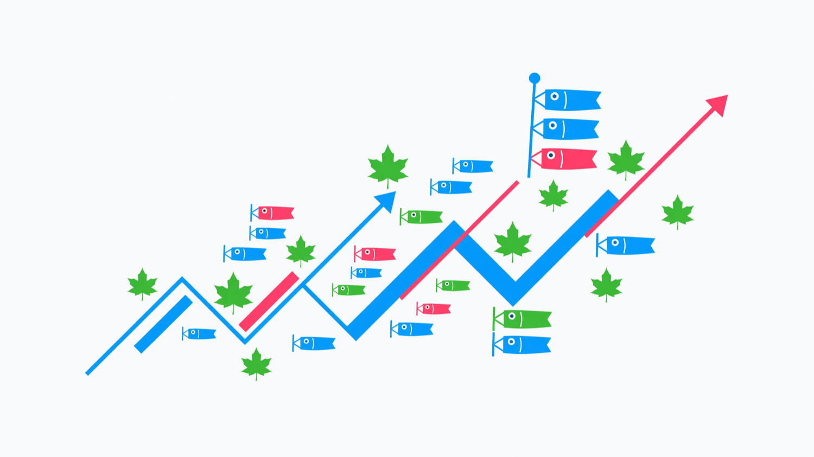

8
Active events
+2 this week
Kodomo no Hi is in 12 days. You have 3 events to finalize and 24 new photos waiting for review.

| Event | Date | Location | Status | Attendees |
|---|---|---|---|---|
| Sakura Elementary Festival | May 5, 10:00 AM | Tokyo | Confirmed | 142 |
| Koinobori Craft Workshop | May 3, 2:00 PM | Osaka | Planning | 38 |
| Family Picnic & Streamers | May 4, 11:00 AM | Kyoto | Needs review | 76 |
| District Parade Rehearsal | Apr 28, 4:00 PM | Yokohama | Confirmed | 210 |